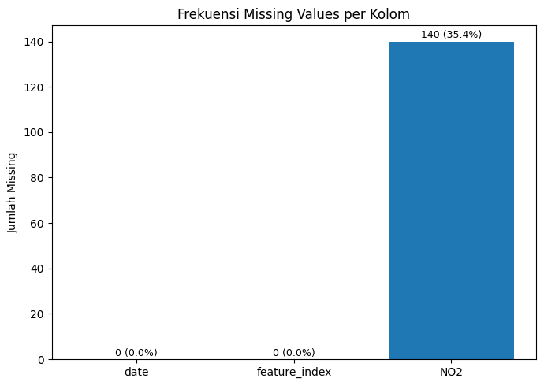

Preprocessing Data (NO2 Medan)#
Pada khasus ini data di processing dengan 2 cara menangani data missing value dan membuat data menjadi supervised
import pandas as pd
import matplotlib.pyplot as plt
import os
1.1 Menangani Missing Value#
Untuk menjaga kontinuitas data deret waktu (time series) dan memastikan model prediksi dapat mempelajari pola historis dengan akurat, nilai-nilai NO₂ yang hilang (missing values) perlu diisi kembali sebelum digunakan dalam proses pelatihan model.
Dalam kasus ini, diterapkan metode interpolasi linier (linear interpolation) untuk memperkirakan nilai yang hilang berdasarkan hubungan antar data di sekitarnya.
Metode ini dipilih karena memiliki beberapa keunggulan:
Mampu memperkirakan nilai kosong berdasarkan kecenderungan perubahan nilai sebelum dan sesudah tanggal yang hilang.
Cocok untuk data lingkungan, seperti konsentrasi gas NO₂, yang umumnya mengalami perubahan secara bertahap dan tidak ekstrem dari hari ke hari.
Menjaga urutan kronologis data, karena interpolasi linier tidak mengubah struktur temporal dataset, sehingga pola waktu tetap konsisten.
Dengan penerapan metode ini, seluruh nilai hilang pada kolom NO₂ dapat diestimasi secara logis tanpa menimbulkan distorsi pada tren data aslinya.
Dataset hasil interpolasi kemudian siap digunakan pada tahap selanjutnya, yaitu pembentukan data supervised learning.
Contoh Data#
new_df = pd.read_csv('timeseries.csv')
new_df = new_df.sort_values(by='date').reset_index(drop=True)
new_df['date'] = pd.to_datetime(new_df['date']).dt.date
new_df
| date | feature_index | NO2 | |
|---|---|---|---|
| 0 | 2020-04-30 | 0 | NaN |
| 1 | 2020-05-01 | 0 | NaN |
| 2 | 2020-05-02 | 0 | 0.000029 |
| 3 | 2020-05-03 | 0 | 0.000025 |
| 4 | 2020-05-04 | 0 | NaN |
| ... | ... | ... | ... |
| 391 | 2021-05-26 | 0 | NaN |
| 392 | 2021-05-27 | 0 | NaN |
| 393 | 2021-05-28 | 0 | 0.000028 |
| 394 | 2021-05-29 | 0 | 0.000020 |
| 395 | 2021-05-30 | 0 | 0.000034 |
396 rows × 3 columns
missing_count = new_df.isnull().sum()
missing_percent = (missing_count / len(new_df)) * 100
fig, ax = plt.subplots(figsize=(7,5))
bars = ax.bar(missing_count.index, missing_count)
ax.set_title("Frekuensi Missing Values per Kolom")
ax.set_ylabel("Jumlah Missing")
for i, v in enumerate(missing_count):
ax.text(i, v + 0.5, f"{v} ({missing_percent[i]:.1f}%)",
ha='center', va='bottom', fontsize=9)
plt.tight_layout()
plt.show()
missing_table = pd.DataFrame({
'Missing Count': missing_count,
'Missing Percent (%)': missing_percent.round(2)
})
missing_table
/tmp/ipython-input-1178675646.py:12: FutureWarning: Series.__getitem__ treating keys as positions is deprecated. In a future version, integer keys will always be treated as labels (consistent with DataFrame behavior). To access a value by position, use `ser.iloc[pos]`
ax.text(i, v + 0.5, f"{v} ({missing_percent[i]:.1f}%)",

| Missing Count | Missing Percent (%) | |
|---|---|---|
| date | 0 | 0.00 |
| feature_index | 0 | 0.00 |
| NO2 | 140 | 35.35 |
new_df = pd.Series(new_df['NO2'].values, index=new_df['date'], name='NO2')
new_df = new_df.interpolate(method='linear').bfill()
new_df = pd.DataFrame(new_df).reset_index()
new_df.to_csv("timeseries_cleaned.csv")
new_df
| date | NO2 | |
|---|---|---|
| 0 | 2020-04-30 | 0.000029 |
| 1 | 2020-05-01 | 0.000029 |
| 2 | 2020-05-02 | 0.000029 |
| 3 | 2020-05-03 | 0.000025 |
| 4 | 2020-05-04 | 0.000026 |
| ... | ... | ... |
| 391 | 2021-05-26 | 0.000033 |
| 392 | 2021-05-27 | 0.000031 |
| 393 | 2021-05-28 | 0.000028 |
| 394 | 2021-05-29 | 0.000020 |
| 395 | 2021-05-30 | 0.000034 |
396 rows × 2 columns
missing_count = new_df.isnull().sum()
missing_percent = (missing_count / len(new_df)) * 100
missing_table = pd.DataFrame({
'Missing Count': missing_count,
'Missing Percent (%)': missing_percent.round(2)
})
missing_table
| Missing Count | Missing Percent (%) | |
|---|---|---|
| date | 0 | 0.0 |
| NO2 | 0 | 0.0 |
Setelah proses interpolasi linier dilakukan pada kolom NO₂, hasil pemeriksaan ulang menunjukkan bahwa seluruh nilai yang hilang telah berhasil diisi dengan baik.
Dengan demikian, dataset kini bebas dari missing value dan siap digunakan untuk tahap berikutnya, yaitu pemodelan prediksi konsentrasi NO₂ menggunakan metode K-Nearest Neighbors (KNN) Regression.
2.2 Konversi ke Supervised Learning#
Pada tahap ini, dilakukan proses konversi data deret waktu (time series) menjadi bentuk supervised learning agar dapat digunakan dalam algoritma pembelajaran mesin.
Hal ini penting karena:
Data time series pada dasarnya hanya berisi nilai-nilai berdasarkan urutan waktu.
Sementara supervised learning membutuhkan pasangan input (X) dan output (y) untuk melatih model.
Oleh sebab itu, dilakukan transformasi dengan cara membuat fitur keterlambatan (lag features), yaitu menjadikan nilai-nilai NO₂ beberapa hari sebelumnya sebagai variabel input untuk memprediksi nilai NO₂ hari berikutnya.
Dalam penelitian ini, dilakukan eksperimen dengan menggunakan lag 2 hingga 5 hari sebelumnya sebagai fitur masukan.
Langkah-langkah Konversi:#
Menginisialisasi dataset lag 1–5 hari, yang masing-masing akan digunakan untuk membuat data supervised.
day1 = new_df
day2 = new_df
day3 = new_df
day4 = new_df
day5 = new_df
Membuat data supervised dengan lag t1 dan t2, di mana dua hari sebelumnya dijadikan fitur masukan.
day1 = day1.drop(columns=['date'])
n = 1
for i in range(1, n + 1):
names = f"t{i}"
day1[names] = day1['NO2'].shift(i)
day1 = day1.dropna().reset_index(drop=True)
day1.to_csv('day1.csv', index=False)
display(day1.head())
| NO2 | t1 | |
|---|---|---|
| 0 | 0.000029 | 0.000029 |
| 1 | 0.000029 | 0.000029 |
| 2 | 0.000025 | 0.000029 |
| 3 | 0.000026 | 0.000025 |
| 4 | 0.000027 | 0.000026 |
Membuat data supervised dengan lag t1 dan t2, di mana dua hari sebelumnya dijadikan fitur masukan.
day2 = day2.drop(columns=['date'])
n = 2
for i in range(1, n + 1):
names = f"t{i}"
day2[names] = day2['NO2'].shift(i)
day2 = day2.dropna().reset_index(drop=True)
day2.to_csv('day2.csv', index=False)
display(day2.head())
| NO2 | t1 | t2 | |
|---|---|---|---|
| 0 | 0.000029 | 0.000029 | 0.000029 |
| 1 | 0.000025 | 0.000029 | 0.000029 |
| 2 | 0.000026 | 0.000025 | 0.000029 |
| 3 | 0.000027 | 0.000026 | 0.000025 |
| 4 | 0.000019 | 0.000027 | 0.000026 |
Membuat data supervised dengan lag t1, t2, dan t3, untuk melihat pengaruh tambahan satu hari historis.
day3 = day3.drop(columns=['date'])
n = 3
for i in range(1, n + 1):
names = f"t{i}"
day3[names] = day3['NO2'].shift(i)
day3 = day3.dropna().reset_index(drop=True)
day3.to_csv('day3.csv', index=False)
display(day3.head())
| NO2 | t1 | t2 | t3 | |
|---|---|---|---|---|
| 0 | 0.000025 | 0.000029 | 0.000029 | 0.000029 |
| 1 | 0.000026 | 0.000025 | 0.000029 | 0.000029 |
| 2 | 0.000027 | 0.000026 | 0.000025 | 0.000029 |
| 3 | 0.000019 | 0.000027 | 0.000026 | 0.000025 |
| 4 | 0.000029 | 0.000019 | 0.000027 | 0.000026 |
Membuat data supervised dengan lag t1, t2, t3, dan t4, untuk memperluas konteks waktu.
day4 = day4.drop(columns=['date'])
n = 4
for i in range(1, n + 1):
names = f"t{i}"
day4[names] = day4['NO2'].shift(i)
day4 = day4.dropna().reset_index(drop=True)
day4.to_csv('day4.csv', index=False)
display(day4.head())
| NO2 | t1 | t2 | t3 | t4 | |
|---|---|---|---|---|---|
| 0 | 0.000026 | 0.000025 | 0.000029 | 0.000029 | 0.000029 |
| 1 | 0.000027 | 0.000026 | 0.000025 | 0.000029 | 0.000029 |
| 2 | 0.000019 | 0.000027 | 0.000026 | 0.000025 | 0.000029 |
| 3 | 0.000029 | 0.000019 | 0.000027 | 0.000026 | 0.000025 |
| 4 | 0.000016 | 0.000029 | 0.000019 | 0.000027 | 0.000026 |
Membuat data supervised dengan lag t1, t2, t3, t4, dan t5, agar model dapat mempertimbangkan kondisi lima hari sebelumnya sebagai prediktor nilai NO₂ hari ini.
day5 = day5.drop(columns=['date'])
n = 5
for i in range(1, n + 1):
names = f"t{i}"
day5[names] = day5['NO2'].shift(i)
day5 = day5.dropna().reset_index(drop=True)
day5.to_csv('day5.csv', index=False)
display(day5.head())
| NO2 | t1 | t2 | t3 | t4 | t5 | |
|---|---|---|---|---|---|---|
| 0 | 0.000027 | 0.000026 | 0.000025 | 0.000029 | 0.000029 | 0.000029 |
| 1 | 0.000019 | 0.000027 | 0.000026 | 0.000025 | 0.000029 | 0.000029 |
| 2 | 0.000029 | 0.000019 | 0.000027 | 0.000026 | 0.000025 | 0.000029 |
| 3 | 0.000016 | 0.000029 | 0.000019 | 0.000027 | 0.000026 | 0.000025 |
| 4 | 0.000019 | 0.000016 | 0.000029 | 0.000019 | 0.000027 | 0.000026 |
Hasil dari proses ini berupa beberapa versi dataset supervised, masing-masing dengan kombinasi jumlah lag features yang berbeda.
Dataset inilah yang selanjutnya digunakan untuk pelatihan model prediksi kualitas udara.